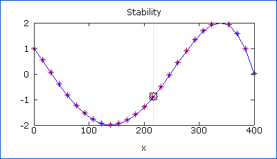

A System Graph displays the evolution of a system parameter as a function of a variable. For a System Graph to be useful, one or more system or optic property should be defined as an equation including the selected ordinate variable.

To change the system property being graphed, click on the graph title and select the desired property from the popup menu. Or, select it from the System Property list in the Property Manager.
To change the variable against which the property should be plotted, click on the X-axis label and select the desired variable from the popup menu. Or, select it from the Ordinate Variable list in the Property Manager.
The X-axis range does not automatically change when the variable range is changed in the Property Manager. To update the graph to show the entire span of the variable range, click on the ordinate variable radio button.
| Property | Description |
| System Property | Specifies which system property value should be plotted on the Y-axis. See table below. |
| Ordinate Variable | Specifies the variable against which the system property should be plotted. Any of the LaserCanvas variables can be used. |
| X-Axis Range | Specifies the minimum and maximum of the horizontal (ordinate variable) axis. |
| Y-Axis Range | Specifies the minimum and maximum of the vertical (system property) axis. |
| Points | Gives the number of points that should be plotted. The number of points is the same for all graphs that plot the same LaserCanvas variable. Note that specifying a large point number can lead to increased calculation times and an unresponsive interface. |
The System Property can be one of the following.
| System Property | Description |
| Physical Length (mm) | The physical length of the system. This is the sum of all of the geometrical separations between the optics. |
| Optical Length (mm) | The optical length of the system. This is the sum of all of the optical lengths, defined as nL for refractive optics, where n is the refractive index and L the geometrical length. In free space, the optical and physical lengths are identical. |
| Mode Spacing (MHz) | For resonators, adjacent longitudinal cavity modes are separated by c/2nL where c is the speed of light and nL the optical length of the resonator. |
| Stability | The stability parameter of the optical system. For more information, see the Reference section. |
For the Physical Length, Optical Length, and Mode Spacing properties, the System Graph displays a single line. For the Stability property, two lines are shown for the sagittal (red) and tangential (blue) planes.